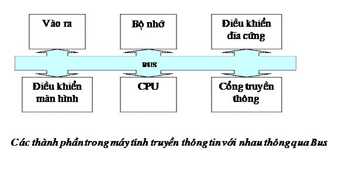
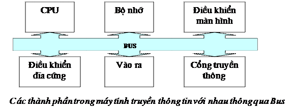

I. phÇn A: Tù luËn (Thùc hµnh trªn m¸y trong: 60 phót)
C©u 1: (3®) Thùc hiÖn trªn Windows
Cho cÊu tróc sau
Yªu cÇu:
1. T¹o theo cÊu tróc trªn
2. Sao chÐp tÖp trong SBD sang HSG vµ ®æi l¹i tªn thµnh HSGK10.txt
Lu ý: Tù nhËp tiÕp c¸c th«ng tin trong phÇn ......cña c¸c th môc trªn
Néi dung trong tÖp Thongtinhocsinh.txt tù so¹n nh÷ng th«ng tin vÒ b¶n th©n thÝ sinh
C©u 2: (3®) Thùc hiÖn trªn MS WORD. H·y so¹n th¶o theo mÉu sau
|
V |
iÖt nam b¾t ®Çu thö nghiÖm kÕt nèi víi Internet tõ n¨m 1992. §Õn n¨m 1997 ViÖt nam chÝnh thøc tham gia Internet. Ngµy 05/03/1997 ChÝnh phñ ®· ra nghÞ ®Þnh 21/CP vÒ quy chÕ sö dông Internet, theo ®ã cã n¨m chñ thÓ tham gia Internet.
IAP (Internet Access Provider) – nhµ cung cÊp dÞch vô ®êng truyÒn ®Ó kÕt nèi víi Internet, qu¶n lÝ cæng nèi víi quèc tÕ.
HiÖn nay, mét sè ®¬n vÞ ®îc cÊp phÐp trë thµnh IAP nh C«ng ti §iÖn to¸n vµ truyÒn sè liÖu VDC thuéc Tæng C«ng ti Bu chÝnh ViÔn th«ng, C«ng ti cæ phÇn §Çu t ph¸t triÓn c«ng nghÖ FTP, C«ng ti ViÔn th«ng Qu©n ®éi Viettel,.......
C¸c ISP (Internet Service Provider) – nhµ cung cÊp c¸c dÞch vô Internet. C¸c ISP ph¶i thuª ®êng vµ cæng cña mét IAP. C¸c ISP cã quyÒn kinh doanh th«ng qua c¸c hîp ®ång cung cÊp dÞch vô Internet cho c¸c tæ chøc vµ c¸c c¸ nh©n.
C©u 3: (4®) Thùc hiÖn trªn MS WORD. VÏ l¹i cho ®óng vÞ trÝ c¸c thµnh phÇn m¸y tÝnh tõ h×nh sau

Yªu cÇu:
1. C©u 2 vµ c©u 3 ®Æt trªn 2 trang kh¸c nhau cã ®¸nh sè trang
2. LÒ cña trang v¨n b¶n ®îc ®Æt theo kho¶ng c¸ch ®Òu nhau lµ 2cm
3. §Æt vµo th môc HSG ®· t¹o ë c©u 1vµ ®Æt tªn tÖp theo qui ®Þnh: hä tªn+sè b¸o danh.doc
II. PhÇn B: Tr¾c nghiÖm (ViÕt trong 30 phót) Mçi c©u 0.5 ®
H·y chän ph¬ng ¸n ®óng
C©u 1: C¸c bé phËn chÝnh trong s¬ ®å cÊu tróc m¸y tÝnh gåm:
A. CPU vµ bé nhí trong B. ThiÕt bÞ vµo/ra
C. Mµn h×nh vµ m¸y in D. Bé nhí ngoµi
E. A,B vµ C F. A,B vµ D
C©u 2: Thanh ghi
A. Kh«ng lµ thµnh phÇn cña CPU
B. Lµ vïng nhí ®Æc biÖt ®îc CPU sö dông ®Ó ghi nhí t¹m thêi c¸c lÖnh vµ d÷ liÖu ®ang ®îc xö lÝ
C. Lµ mét phÇn bé nhí trong
D. A vµ B
C©u 3: ROM lµ bé nhí dïng ®Ó
A. Chøa c¸c ch¬ng tr×nh hÖ thèng ®îc h·ng s¶n xuÊt cµi ®Æt s½n vµ ngêi dïng thêng kh«ng thay ®æi ®îc
B. Chøa c¸c d÷ liÖu quan träng
C. Chøa hÖ ®iÒu hµnh MSDOS
D. B vµ C
C©u 4: Trong m¸y tÝnh, æ ®Üa cøng lµ thiÕt bÞ
A. Chuyªn dïng ®Ó lµm thiÕt bÞ vµo
B. Chuyªn dïng ®Ó lµm thiÕt bÞ ra
C. A vµ B
D. C¶ A,B, C ®Òu sai
C©u 5: §Üa mÒm lµ mét lo¹i thiÕt bÞ nhí dïng ®Ó lu tr÷ d÷ liÖu cña m¸y tÝnh. H·y chän ph¸t biÓu ®óng vÒ xuÊt xø cña tªn gäi ®Üa mÒm trong c¸c ph¬ng ¸n sau:
A. Do dung lîng cña ®Üa nhá
B. Do dung lîng ®Üa cã thÓ dÔ dµng thay ®æi theo nhu cÇu sö dông
C. Do ®Üa ®îc lµm b»ng chÊt dÎo
D. B vµ C
C©u 6: §iÒn vµo chè trèng trong c¸c c©u díi ®©y b»ng c¸ch chän côm tõ thÝch hîp trong danh s¸ch: hÖ thèng tin häc, m¸y tÝnh, phÇn mÒm, phÇn cøng, hÖ ®iÒu hµnh, thanh ghi, ch¬ng tr×nh, ROM, RAM, bé nhí chÝnh, bé nhí trong, bé nhí ngoµi, CPU, CU, ALU, lÖnh vµ d÷ liÖu.
A. PhÇn cøng gåm c¸c thiÕt bÞ trong ®ã ph¶i cã..................................(máy tính), phÇn mÒm gåm c¸c........................(chương trình)vµ sù qu¶n lÝ ®iÒu khiÓn cña con ngêi t¹o nªn mét.........................(hệ thống tin học)
B. Khi bé nhí trong lµ (RAM)................................néi dung cña nã cã thÓ ®îc thay ®æi.
C. Khi bé nhí trong lµ (ROM)................................néi dung cña nã (nãi chung) kh«ng thÓ thay ®æi.
D. (CU)................................kh«ng trùc tiÕp thùc hiÖn ch¬ng tr×nh mµ híng dÉn c¸c bé phËn kh¸c cña m¸y tÝnh lµm viÖc ®ã.
E. (ALU).................................thùc hiÖn c¸c phÐp to¸n sè häc vµ logic
F. Thanh ghi dïng ®Ó lu tr÷ t¹m thêi c¸c(lệnh và dữ liệu)........................®ang ®îc xö lÝ
G. Mét hÖ thèng m¸y tÝnh gåm ba phÇn chÝnh, ®ã lµ (phần cứng, phần mềm).........................vµ sù qu¶n lÝ cña con ngêi.
H. Cache lµ vïng nhí ®ãng vai trß trung gian gi÷a bé nhí vµ c¸c.........................(thanh ghi)
I. Víi ch¬ng tr×nh vµ d÷ liÖu muèn lu tr÷ l©u dµi, chóng ta lu tr÷ chóng ë..............................(bộ nhớ ngoài)
J. Bé nhí trong cßn ®îc gäi lµ ...................................................(bộ nhớ chính)
C©u 7: Nãi r»ng d·y thao t¸c sau lµ “ m« t¶ thuËt to¸n kiÓm tra mét sè nguyªn d¬ng N(N>2) cã ph¶i lµ sè nguyªn tè hay kh«ng: ®óng hay sai?
Bíc 1: Chia sè N cho mäi sè nguyªn n»m gi÷a 1 vµ chÝnh nã;
Bíc 2: NÕu kh«ng cã phÐp chia hÕt th«ng b¸o N lµ nguyªn tè, cßn kh«ng th× th«ng b¸o N kh«ng lµ nguyªn tè.
A. §óng B. Sai
C©u 8: Cho bèn sè nguyªn. CÇn tèi thiÓu bao nhiªu phÐp so s¸nh ®Ó lu«n cã thÓ s¾p xÕp 4 sè nµy theo thø tù t¨ng dÇn?
A. 3 B. 4 C. 5 D. 6
C©u 9: HÖ ®iÒu hµnh lµ
A. PhÇn mÒm hÖ thèng C. PhÇn mÒm v¨n phßng
B. PhÇn mÒm øng dông D. A vµ C
C©u 10: HÖ ®iÒu hµnh thêng ®îc lu tr÷ ë ®©u?
A. Bé nhí trong C. §Üa mÒm
B. USB D. Bé nhí ngoµi
C©u 11: HÖ ®iÒu hµnh nµo díi ®©y kh«ng ph¶i hÖ ®iÒu hµnh ®a nhiÖm nhiÒu ngêi dïng?
A. Windows 2000 C. MS-DOS
B. UNIX D. Linux
C©u 12: Trong tin häc, OS lµ viÕt t¾t cña côm tõ nµo sau ®©y?
A. Operating System B. Online System C. Open Source
C©u 13: Chøc n¨ng nµo díi ®©y kh«ng ®îc coi lµ chøc n¨ng chÝnh cña hÖ ®iÒu hµnh?
A. §iÒu khiÓn c¸c thiÕt bÞ ngo¹i vi B. Giao tiÕp víi ngêi dïng
C. Biªn dÞch ch¬ng tr×nh D. Qu¶n lÝ tÖp
C©u 14: Trong c¸c ph¸t biÓu sau vÒ chøc n¨ng c¬ b¶n cña hÖ ®iÒu hµnh. Ph¸t biÓu nµo sai?
A. Cung cÊp m«i trêng giao tiÕp ngêi víi m¸y
B. Qu¶n lÝ th«ng tin trªn bé nhí ngoµi
C. Qu¶n lÝ (ph©n phèi, thu hèi) c¸c tµi nguyªn cña m¸y tÝnh cho c¸c ch¬ng tr×nh
D. Qu¶n lÝ giao tiÕp víi c¸c m¸y tÝnh kh¸c trªn m¹ng
E. Qu¶n lÝ c¸c c«ng viÖc xö lÝ trªn m¸y
C©u 15: HÖ ®iÒu hµnh cã chøc n¨ng:
A. Tæ chøc lu tr÷ th«ng tin trªn bé nhí ngoµi, cung cÊp c«ng cô t×m kiÕm vµ truy cËp th«ng tin
B. Tæ chøc thùc hiÖn c¸c ch¬ng tr×nh
C. Gi¶i mét sè bµi to¸n quan träng
D. Khëi ®éng m¸y tÝnh vµ hiÓn thÞ th«ng tin lªn mµn h×nh
E. CUng cÊp tµi nguyªn (bé nhí, thiÕt bÞ ngo¹i vi...) cho c¸c ch¬ng tr×nh
F. T¹o m«i trêng ®Ó ngêi dïng lµm viÖc víi ®Üa, truy cËp m¹ng
H·y chän c¸c ph¬ng ¸n ghÐp ®óng
C©u 16: Trong tin häc, tÖp lµ kh¸i niÖm chØ:
A. Mét v¨n b¶n
B. Mét ®¬n vÞ lu tr÷ th«ng tin trªn bé nhí ngoµi
C. Mét gãi tin
D. Mét trang Web
H·y chän ph¬ng ¸n ghÐp ®óng
C©u 17: T×m c¸c c©u sai trong nh÷ng c©u sau:
A. Trong cïng mét th môc cã thÓ lu tr÷ hai tÖp cïng phÇn tªn nhng cã phÇn më réng kh¸c nhau
B. Hai th môc cïng tªn ph¶i ë trong hai th môc mÑ kh¸c nhau
C. Th môc cã thÓ chøa tÖp cïng tªn víi th môc ®ã
D. §Ó chØ mét tÖp ë th môc nµo ngêi ta thêng lÊy tªn th môc ®ã lµm phÇn tªn cña tÖp vµ bæ sung thªm phÇn më réng.
C©u 18: Tªn tÖp nµo sau ®©y kh«ng hîp lÖ trong hÖ ®iÒu hµnh Windows?
A. BAITAP.PAS B. DETHI.*
C. THUATTOAN D. ABC.DEF
C©u 19: §iÒn tiÕp vµo chç trèng vÒ chøc n¨ng hÖ ®iÒu hµnh.
A. Tæ chøc giao tiÕp gi÷a ngêi dïng vµ .....................(hệ thống)
B. Cung cÊp tµi nguyªn cho..................vµ tæ chøc thùc hiÖn ....................................
C. Tæ chøc lu tr÷ th«ng tin trªn.............................
D. Hç trî phÇn mÒm cho ..........................................
E. Cung cÊp c¸c dÞch vô....................................
C©u 20: Söa lçi sai trong c¸c ®êng dÉn trong hÖ ®iÒu hµnh MSDOS sau
A. C:\KIEMTRA\TINHOC.TXT\BAITAP
"
B. C:\BAITAP\TINHOC\bai tap3.abc
"
C. C:\TINHOC\ch¬ng1\bai4”.txt
"
Híng dÉn chÊm vµ ®¸p ¸n
I. phÇn A: Tù luËn (Thùc hµnh trªn m¸y trong: 60 phót)
C©u 1: (3®) Thùc hiÖn trªn Windows
1. T¹o theo ®óng cÊu tróc: 1.5®
2. Sao chÐp tÖp trong SBD sang HSG: 0.5®
§æi l¹i tªn thµnh HSGK10.txt: 0.5®
- Tù nhËp tiÕp c¸c th«ng tin trong phÇn ......cña c¸c th môc trªn vµ Néi dung trong tÖp Thongtinhocsinh.txt so¹n th«ng tin vÒ b¶n th©n thÝ sinh: 0.5®
C©u 2: (3®) Thùc hiÖn trªn MS WORD. H·y so¹n th¶o theo mÉu sau
- T¹o tiªu ®Ò lµ ch÷ nghÖ thuËt:0.5®
- T¹o ch÷ c¸i lín ®Çu ®o¹n: 0.5®
- Chia 2 cét cho toµn v¨n b¶n:0.5®
- D·n dßng:0.5®
- Tr×nh bµy ®óng, ®ñ néi dung:0.5®
- Trang trÝ ®Ñp:0.5®
C©u 3: (4®) Thùc hiÖn trªn MS WORD. S¾p xÕp l¹i cho ®óng vÞ trÝ c¸c thµnh phÇn trong m¸y tÝnh vµ vÏ
- VÏ l¹i ®óng, ®Çy ®ñ theo h×nh sau:2®

- Tr×nh bµy ®Ñp:0.5®
- §¸nh sè trang:0.5®
- §Æt lÒ ®óng qui ®Þnh:0.5®
- Lu v¨n b¶n ®óng yªu cÇu:0.5®
II. PhÇn B: Tr¾c nghiÖm (ViÕt trong 30 phót) Mçi c©u 0.5 ®
|
C©u 1: F C©u 2: B C©u 3: A C©u 4: D |
C©u 5: C C©u 6: A. M¸y tÝnh, Ch¬ng tr×nh, hÖ thèng tin häc B. Ram C. Rom D. CU E. ALU F. lÖnh vµ d÷ liÖu G. phÇn cøng, phÇn ,mÒm H. thanh ghi I. bé nhí ngoµi K. Bé nhí chÝnh
|
C©u 7:A C©u 8: C C©u 9: A C©u 10: D C©u 11: C C©u 12: A C©u 13: C C©u 14: D C©u 15: A,B C©u 16: B C©u 17: D C©u 18: B C©u 19.A. HÖ thèng B. C¸c ch¬ng tr×nh, c¸c ch¬ng tr×nh ®ã C.bé nhí ngoµi J. c¸c thiÕt bÞ ngo¹i vi K. tiÖn Ých hÖ thèng C©u 20: A. C:\KIEMTRA\BAITAP\Tinhoc.txt B. C:\BAITAP\TINHOC\baitap3.abc C.C:\TINHOC\CHUONG1\bai4.txt
|